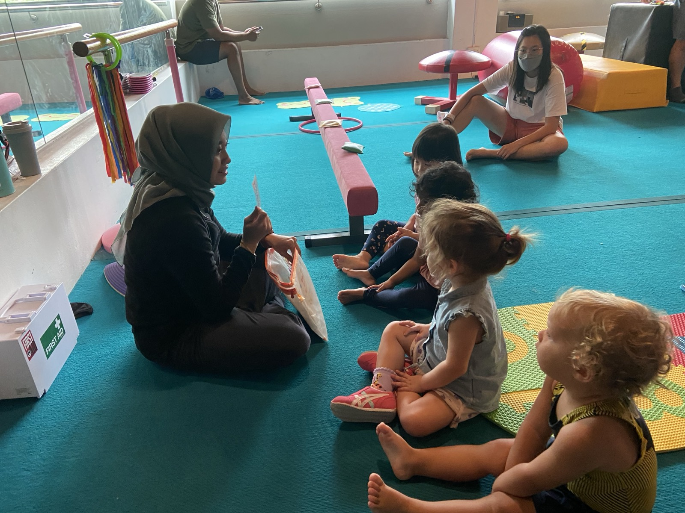

Gym Tots
The class where most Yard members take their first step, with you on the floor beside them. Toddlers and an adult explore obstacle courses and movement stations together, which builds early confidence, body awareness and the listening skills that set children up for pre-school, sport and friendships. It is also a special hour of the week for the grown-up who joins in.
What a class looks like
Play-based stations and obstacle courses, with strength, coordination and flexibility developing through play. Balance and listening come from following the coach's cues, and a coach who knows your child by name is on the floor for all of it.

- Runs at
- Jurong Weekly
- Bukit Timah Weekly
- Dempsey Weekly
- Dover Weekly